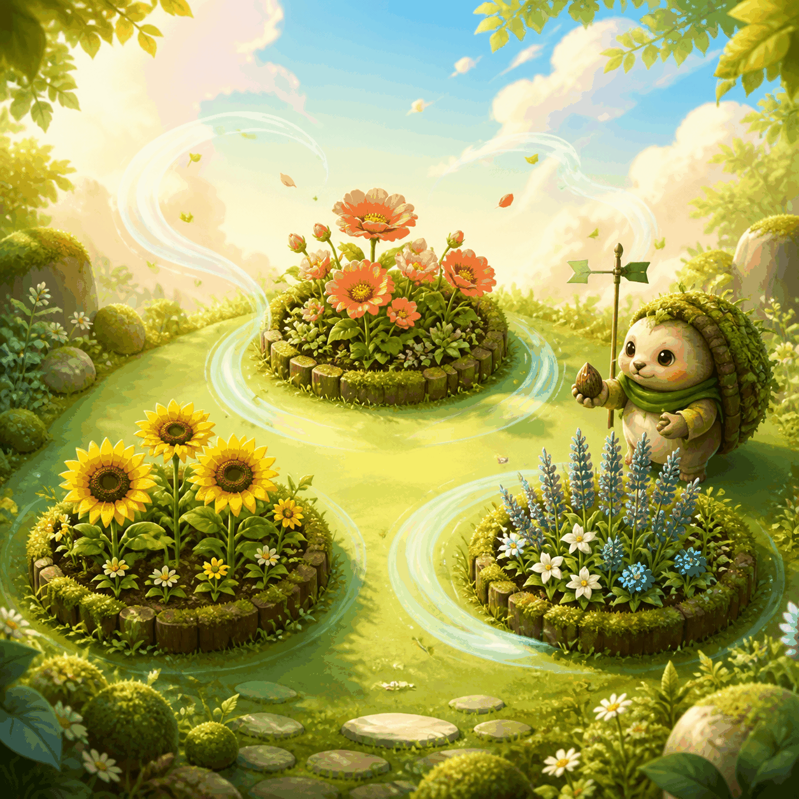

How to play
- Choose a seed, then choose one cardinal gust.
- Send the gust and read the meadow response.
- Use Reset to try a plot again without pressure.
Waking the garden breeze…

Mosslight meadow
Choose a seed, point the vane, and guide every seed to a flower without brushing a thorn.
Breeze plots
Select a plot, then guide each seed one square at a time.
Breeze plot
Choose a gust
Plot in bloom
Plan one wind step at a time and guide every seed to a flower.
Every plot is a small five-by-four meadow. Seeds, flowers, thorns, and open grass are deliberately visible before you make a move. A seed can be selected with a pointer, keyboard, or touch. The highlighted outline is your reminder of which seed will respond to the next gust. Flowers are destinations, while thorns are permanent blockers that never move. Take a quiet moment to trace the open squares between them.
A gust moves the selected seed exactly one square in the chosen cardinal direction. North, east, south, and west are the only choices, so diagonal shortcuts are not part of the puzzle. Look for the flower that is easiest to reach first, then keep other seeds out of its path. When two seeds share a corridor, finish the one at the far end before filling the near square. The board never adds a surprise tile, which means every route can be reasoned about from the starting layout.
A blocked gust is safe feedback, not a penalty. The status message tells you whether a thorn, meadow edge, or another seed stopped the move. Change the direction or select a different seed and continue. If your plan becomes tangled, choose Reset plot to restore the original arrangement for that plot. There is no timer, life counter, or loss screen. Replaying a plot is part of learning its rhythm, and a calm retry is always preferable to guessing at several moves in a row.
Gust Garden contains three authored plots that gradually introduce tighter corridors and more deliberate ordering. Completing a plot marks its flowers as blooming on the stage map and unlocks the next plot. Your best gust count and completed-plot progress are stored only in this browser when local storage is available. Nothing needs an account, and the game does not send board choices to a server. Clearing browser data removes those local records, but every plot remains replayable from its original starting state.
These habits make the game feel like a tiny garden walk: observe, choose a direction, listen to the result, and adjust.